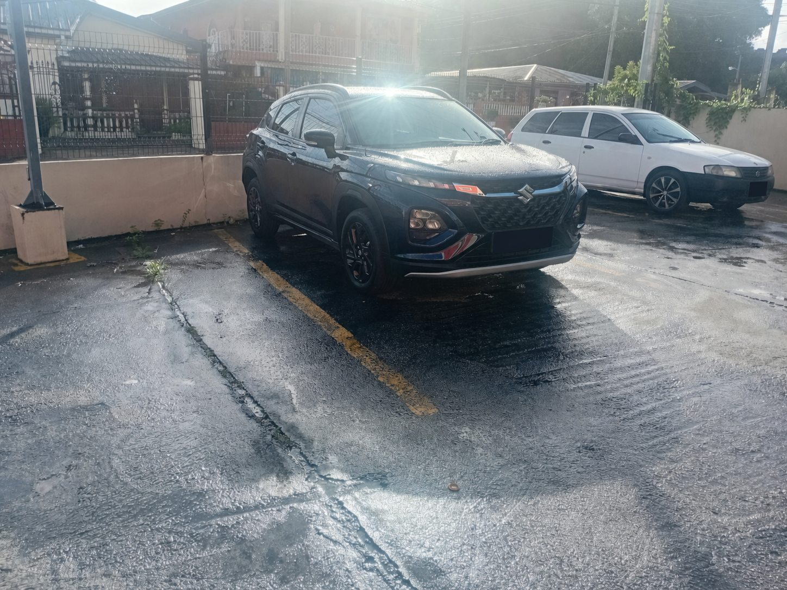

Journey
Date, requested pickup time, exact pickup point and final destination.
Piarco International Airport
Pre-booked transportation to or from Piarco International Airport, with flight monitoring for arriving passengers and direct private service to your agreed destination.
Personalized quotations · Up to four passengers, subject to luggage

A smoother airport journey
Island Base provides pre-booked private transportation for airport arrivals and departures. Your written quotation confirms the pickup, destination, timing, passenger and luggage details, inclusions and important conditions before the booking is accepted.
Airport pickup guide
Clear communication helps make curbside collection simple, especially when the airport is busy.
Send the correct airline and flight number when requesting your quotation.
Island Base uses the supplied flight information to monitor the scheduled arrival and delays.
Disembark, clear immigration and customs where applicable, and collect all luggage.
Follow the WhatsApp or telephone instructions provided in your written booking confirmation.
Collection takes place at the confirmed terminal curbside location. Airport access rules may affect the exact meeting point.
Continue directly to the confirmed destination, unless additional stops were included in your quotation.
Before requesting a quote
Accurate information helps Island Base confirm vehicle suitability and prepare the correct quotation.
Date, requested pickup time, exact pickup point and final destination.
Airline and accurate flight number for an arriving passenger.
Number of travelers, including children and any relevant child-seat arrangements.
Number and approximate size of suitcases, carry-ons and any mobility equipment.
Every additional pickup, drop-off or requested stop in the correct order.
Any transportation-assistance, parking or access requirement relevant to the journey.
Plan your airport journey
Complete the airport form and WhatsApp will open with your journey details prepared for Island Base.
Complete the Airport Form ↗The website does not store the information you enter. You decide whether to send the prepared WhatsApp message.